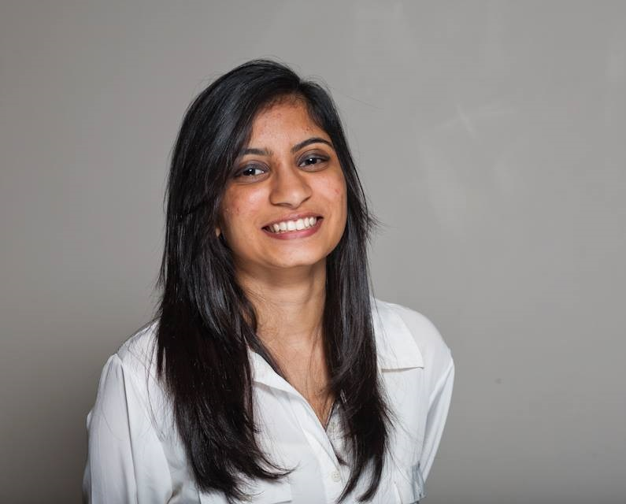
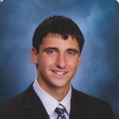
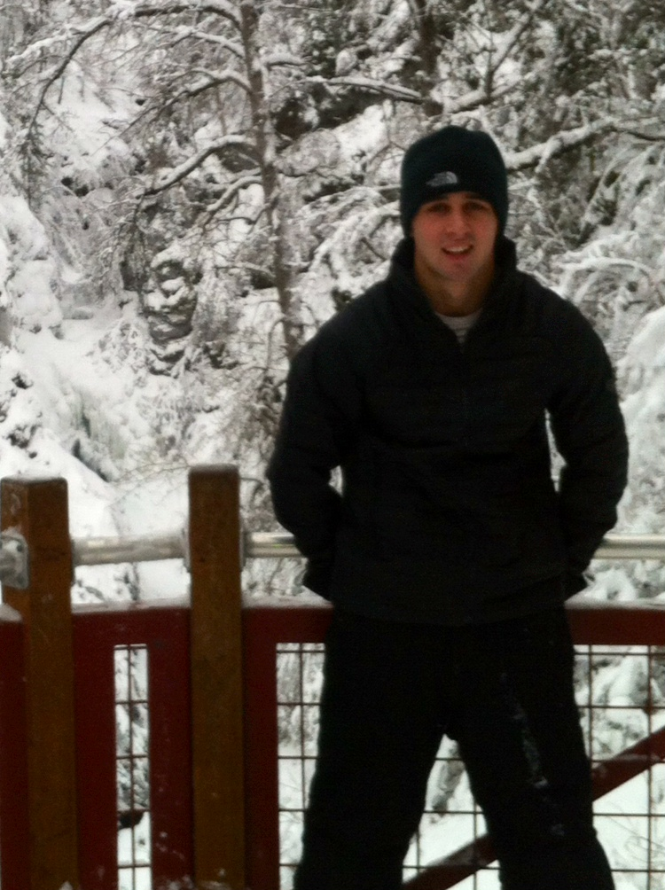
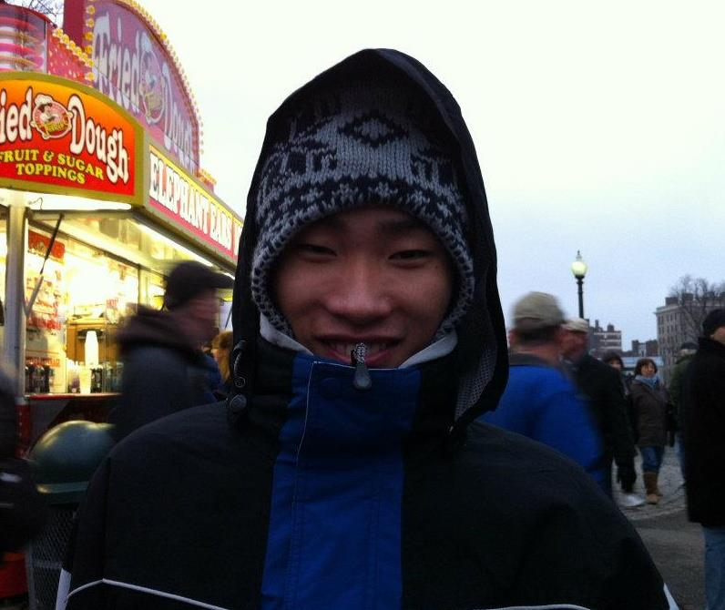
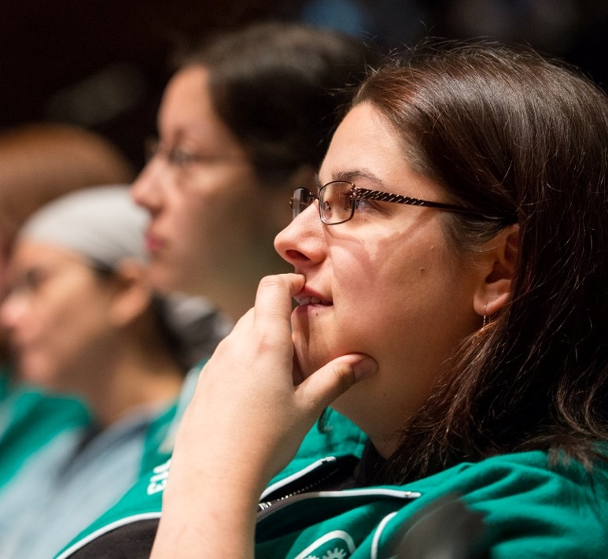

Let us know how we can make your experience better
Let us know how we can make your experience better
Organization
Owl is brought to you by CIDAR
Please contact us if you're interested in having CIDAR build solutions for your research goals
Email Us
Support
Please send all questions and comments to eapple@bu.edu
Our dedicated support team is composed of software developers that have contributed to the Owl Datasheet Builder. We will address your questions and concerns in under 24 hours.
In your email, please follow these guidelines for email communication:
- Indicate your name and professional affiliation
- If you are interested in forming a commercial or research relationship with CIDAR, please contact Dr. Densmore directly
- If your email is about a bug or problem in Owl:
- Please use a short description of the problem as the message header
- Include the stack trace error message if applicable
We appreciate all forms of feedback.
Thank you
Owl Development Team
Development Team
Evan Appleton
 Evan Appleton
Evan Appletoneapple@bu.edu
B.S. 2010 Biomedical Engineering, Boston University
M.S. 2012 Bioinformatics, Boston University
Evan is a PhD candidate in the Densmore Lab who works on design automation tools for synthetic biology. Specifically, Evan works on software tools for verification, assembly and debugging of synthetic genetic devices with experimental inputs and feedback. His work, including this tool, is integrated into the Clotho design platform and is intended to increase the speed and scale of synthetic biology via automation. Evan is also currently the Co-President of the SynBERC Student & Post-Doc Association.
Jenhan Tao
 Jenhan Tao
Jenhan Taojenhantao@gmail.com
B.S. 2012 Bioengineering, UC Berkeley
Jenhan is a software developer who has been working with the Densmore lab since 2011. He was involved in synthetic biology research at both UC Berkeley and Boson University while completing his undergraduate studies. Jenhan will be starting as a Ph.D student in the Bioinformatics and Systems Biology program at UC San Diego in Fall, 2013. As he continues his studies, Jenhan is interested in utilizing computational techniques to increase our capacity to understand biological complexity.
Devina Desai
 Devina Desaiddesai1@bu.edu
B.S. 2014 Biomedical Engineering, Boston University
Devina is a Senior studying Biomedical Engineering at BU. She was a member of the BU 2013 iGEM team and is currently working on her Senior Design project in CIDAR.
Pooja Shah
Pooja Shahpshah23@bu.edu
B.S. 2014 Biomedical Engineering, Boston University
Pooja is a senior studying Biomedical Engineering. She was a member of the Boston University 2013 iGEM team and is currently completing her senior design project about synthetic biology in CIDAR and the Center of Synthetic Biology (CoSBi).
Thomas Lozanoski
 Thomas Lozanoskitlozanos@bu.edu
B.S. 2016 Biomedical Engineering, Boston University
Thomas is an undergraduate in the Boston University College of Engineering. He is studying biomedical engineering and was a part of the BostonU 2013 iGEM team. He is excited to explore the promising applications of synthetic biology.
Jake Awtry
 Jake Awtryjawtry@bu.edu
B.S. Biochemistry & Molecular Biology, Boston University
Jake is a sophomore studying Biochemistry & Molecular Biology in the College of Arts and Sciences. He contributed to CIDAR as part of the 2013 iGEM Competition and continued as an undergraduate researcher investigating further applications of Modular Cloning. In the future, he aspires to attend medical school.
Shawn Jin
 Shawn Jinsjin@bu.edu
B.S. 2015 Human Physiology, Boston University
Shawn is a junior studying human physiology as part of the College of Health and Rehabilitation. He enjoys ballroom dancing and exploring Boston.
Traci Haddock
 Traci Haddockthaddock@bu.edu
B.A. 2003 Biology, Assumption College
Ph.D. 2011 Cell and Molecular Biology, University of Rhode Island
Dr. Haddock is the Executive Director of the Center of Synthetic Biology (CoSBi) at Boston University. She received her Ph.D. in Cell and Molecular Biology with a focus on marine microbiology from URI under the guidance of Prof. Bethany Jenkins. She was a postdoctoral research associate in the Department of Electrical and Computer Engineering at Boston University from 2011-2013 in Prof. Douglas Densmore's research group before joining CoSBi. She has been the team advisor for BU's iGEM teams in 2012 and 2013 and will continue with that role in 2014.
Douglas Densmore
 Douglas Densmore
Douglas Densmoredougd@bu.edu
B.S.E. 2001 Computer Engineering, University of Michigan
M.S. 2004 Electrical Engineering, UC Berkeley
Ph.D. 2007 Electrical Engineering, UC Berkleley
Professor Densmore is the Richard and Minda Reidy Family Career Development Assistant Professor at Boston University in the Department of Electrical and Computer Engineering. He received his Ph.D. in Electrical Engineering in 2007 from UC Berkeley. He was a postdoctoral research fellow at SynBERC and the Joint BioEnergy Institute from 2007 to 2010. His research centers on extracting design techniques from Electronic Design Automation and applying them to the design of synthetic biological systems. The Clotho unified toolset, a two time winner of the best software tool at the iGEM Competition, is a platform which captures many of these research concepts. He is the recipient of the NSF CARRER Award, the 2012 ECE Award for Excellence in Teaching at Boston University, and a 2012-2014 Hariri Institute for Computing and Computational Science & Engineering at BU Junior Faculty Fellow.